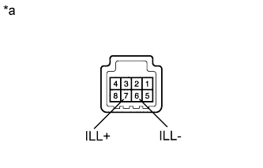

HEADLIGHT CLEANER SWITCH > INSPECTION |
| 1. INSPECT HEADLIGHT CLEANER SWITCH ASSEMBLY |
|  |
Measure the resistance according to the value(s) in the table below.
| Tester Connection | Switch Condition | Specified Condition |
| 5 - 8 | Headlight cleaner switch on | Below 1 Ω |
| Headlight cleaner switch off | 10 kΩ or higher |
Connect the positive (+) lead of the battery to terminal 7 (ILL+) and the negative (-) lead to terminal 6 (ILL-).
Check that the headlight cleaner switch assembly illumination comes on.
| *a | Component without harness connected (Headlight Cleaner Switch Assembly) |